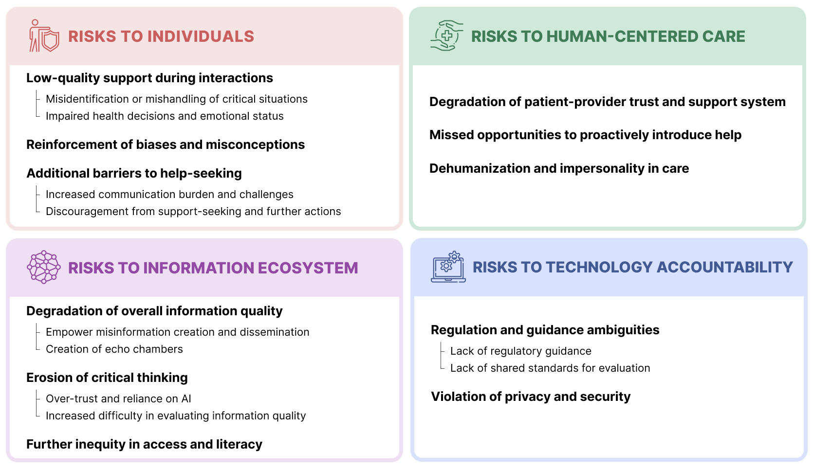

ABOUT ME
I am a PhD Candidate in Human-Centered Computing at Georgia Tech. My research broadly focuses on Human-AI Interaction, Social Computing, and Health & Wellbeing, with an emphasis on helping people meaningfully engage with AI in complex information environments and health contexts. I adopt a theory-guided approach using both computational and qualitative methods to understand the role of technology in addressing or exacerbating problems in the information environment, public health, social interactions, and individual well-being. I am a member of the Social Dynamics and Wellbeing (SocWeB) Lab under the advisory of Dr. Munmun De Choudhury.
While technology has democratized information access and authorship, it also presents unique challenges for individuals in assessing information quality and reliability. These challenges have become more pronounced with the emergence of Generative AI technologies like large language models (LLMs), which can produce low-quality content (such as inaccurate or biased information) with high scalability and persuasiveness. I adopt a human-centered approach to contextualizing and mitigating harms of using AI to meet health informational needs. Specifically, my research explores both the risks associated with utilizing AI’s generative abilities for informational needs and the broader public discourse and perceptions surrounding them.
My research has been published at premier computing venues, such as CHI, CSCW, and ACL, and has been recognized by paper awards at CHI and CSCW and the Foley Scholar Award (Georgia Tech highest award for study excellence in research contributions to computing).
RECENT NEWS
- üé§ [Nov 2025] Invited panelist @ APHA Annual Meeting in DC.
- üé§ [Oct 2025] Presented 2 papers & 1 workshop work @ CSCW in Norway.
- üèÖ [Oct 2025] Our paper "Harm in Layers: Compositions of Misinformative Hate in Anti-Asian Speech and Impacts on Perceived Harmfulness" received Best Paper + DEI Recognition at CSCW!
- üö© [July 2025] I passed my thesis proposal! Now I'm a PhD candidate:)
- üìÑ [July 2025] Two paper accepts! 1) "A Risk Taxonomy and Reflection Tool for LLM Adoption in Public Health" is accepted to CSCW'25, and 2) "A Framework for Situating Innovations, Opportunities, and Challenges in Advancing Vertical Systems with Large AI Models" is accepted to AIES'25.
- üé§ [June 2025] Invited talk @ Conference on AI in Medicine (AIME'25).
- üé§ [April 2025] Invited talk @ IPaT: GVU Lunch Lecture Series.
- üìÑ [Dec 2024] Our work "Harm in Layers: Compositions of Misinformative Hate in Anti-Asian Speech and Impacts on Perceived Harmfulness" is accepted to CSCW'25.
- üèÖ [Nov 2024] Honored to receive the Foley Scholar Award (the highest award for PhD student research contributions to computing at Georgia Tech)!
- üìÑ [May 2024] Our work "A Community-Centric Perspective for Characterizing and Detecting Anti-Asian Violence-Provoking Speech" is accepted to ACL.
- üèÖ [Apr 2023] Our paper "Synthetic Lies: Understanding AI-Generated Misinformation and Evaluating Algorithmic and Human Solutions" received Best Paper Honorable Mention at CHI!
HIGHLIGHTED WORK
Synthetic Lies: Understanding AI-Generated Misinformation and Evaluating Algorithmic and Human Solutions
üèÖBest Paper Honorable Mention
Jiawei Zhou, Yixuan Zhang, Qianni Luo, Andrea G Parker, Munmun De Choudhury
Proceedings of the 2023 CHI Conference on Human Factors in Computing Systems (pp. 1-20).
title={Synthetic Lies: Understanding AI-Generated Misinformation and Evaluating Algorithmic and Human Solutions},
author={Zhou, Jiawei and Zhang, Yixuan and Luo, Qianni and Parker, Andrea G and De Choudhury, Munmun},
booktitle={Proceedings of the 2023 CHI Conference on Human Factors in Computing Systems},
pages={1--20},
year={2023},
isbn = {9781450394215},
publisher = {Association for Computing Machinery},
address = {New York, NY, USA},
url = {https://doi.org/10.1145/3544548.3581318},
doi = {10.1145/3544548.3581318},
series = {CHI '23}
}
üìù Covered by UK government‚Äôs AI Foundation Models Initial Review, CNET, National Business Daily, Georgia Tech College of Computing Press
 Read Abstract
Read Abstract
A Risk Taxonomy and Reflection Tool for Large Language Model Adoption in Public Health
Jiawei Zhou, Amy Z. Chen, Darshi Shah, Laura Schwab Reese, Munmun De Choudhury
Proc. ACM Hum.-Comput. Interact. 9, 7, Article CSCW363 (November 2025), 32 pages.
author = {Zhou, Jiawei and Chen, Amy Z. and Shah, Darshi and Schwab-Reese, Laura M. and De Choudhury, Munmun},
title = {A Risk Taxonomy and Reflection Tool for Large Language Model Adoption in Public Health},
year = {2025},
month = {nov},
publisher = {Association for Computing Machinery},
address = {New York, NY, USA},
volume = {9},
number = {7},
url = {https://doi.org/10.1145/3757544},
journal = {Proc. ACM Hum.-Comput. Interact.},
articleno = {363},
numpages = {32}
}

Read Abstract
Harm in Layers: Compositions of Misinformative Hate in Anti-Asian Speech and Impacts on Perceived Harmfulness
üèÖBest Paper üèÖDEI Recognition
Jiawei Zhou, Gaurav Verma, Lei Zhang, Nicholas Chang, Munmun De Choudhury
Proc. ACM Hum.-Comput. Interact. 9, 2, Article CSCW092 (April 2025), 22 pages.
author = {Zhou, Jiawei and Verma, Gaurav and Zhang, Lei and Chang, Nicholas and De Choudhury, Munmun},
title = {Harm in Layers: Compositions of Misinformative Hate in Anti-Asian Speech and Impacts on Perceived Harmfulness},
year = {2025},
month = {apr},
publisher = {Association for Computing Machinery},
address = {New York, NY, USA},
volume = {9},
number = {2},
url = {https://doi.org/10.1145/3710990},
journal = {Proc. ACM Hum.-Comput. Interact.},
articleno = {92},
numpages = {22}
}
 Read Abstract
Read Abstract
SELECTED PUBLICATIONS
CSCW'25 A Risk Taxonomy and Reflection Tool for Large Language Model Adoption in Public Health
Jiawei Zhou, Amy Z. Chen, Darshi Shah, Laura M. Schwab Reese, Munmun De Choudhury
Proc. ACM Hum.-Comput. Interact. 9, 7, Article CSCW363 (November 2025), 32 pages.
author = {Zhou, Jiawei and Chen, Amy Z. and Shah, Darshi and Schwab-Reese, Laura M. and De Choudhury, Munmun},
title = {A Risk Taxonomy and Reflection Tool for Large Language Model Adoption in Public Health},
year = {2025},
month = {nov},
publisher = {Association for Computing Machinery},
address = {New York, NY, USA},
volume = {9},
number = {7},
url = {https://doi.org/10.1145/3757544},
journal = {Proc. ACM Hum.-Comput. Interact.},
articleno = {363},
numpages = {32}
}
AIES'25 A Framework for Situating Innovations, Opportunities, and Challenges in Advancing Vertical Systems with Large AI Models
Gaurav Verma, Jiawei Zhou, Mohit Chandra, Srijan Kumar, Munmun De Choudhury
Proceedings of the AAAI/ACM Conference on AI, Ethics, and Society 2025.
title={A Framework for Situating Innovations, Opportunities, and Challenges in Advancing Vertical Systems with Large AI Models},
author={Verma, Gaurav and Zhou, Jiawei and Chandra, Mohit and Kumar, Srijan and De Choudhury, Munmun},
booktitle={Proceedings of the AAAI/ACM Conference on AI, Ethics, and Society},
month = oct,
year = "2025"
}
CSCW'25 Harm in Layers: Compositions of Misinformative Hate in Anti-Asian Speech and Impacts on Perceived Harmfulness
üèÖBest Paper üèÖDEI Recognition
Jiawei Zhou, Gaurav Verma, Lei Zhang, Nicholas Chang, Munmun De Choudhury
Proc. ACM Hum.-Comput. Interact. 9, 2, Article CSCW092 (April 2025), 22 pages.
author = {Zhou, Jiawei and Verma, Gaurav and Zhang, Lei and Chang, Nicholas and De Choudhury, Munmun},
title = {Harm in Layers: Compositions of Misinformative Hate in Anti-Asian Speech and Impacts on Perceived Harmfulness},
year = {2025},
month = {apr},
publisher = {Association for Computing Machinery},
address = {New York, NY, USA},
volume = {9},
number = {2},
url = {https://doi.org/10.1145/3710990},
journal = {Proc. ACM Hum.-Comput. Interact.},
articleno = {92},
numpages = {22}
}
ACL'24 A Community-Centric Perspective for Characterizing and Detecting Anti-Asian Violence-Provoking Speech
Gaurav Verma, Rynaa Grover, Jiawei Zhou, Binny Mathew, Jordan Kraemer, Munmun De Choudhury, Srijan Kumar
Proceedings of the 62nd Annual Meeting of the Association for Computational Linguistics (Volume 1: Long Papers) (pp.12672-12684).
title={A Community-Centric Perspective for Characterizing and Detecting Anti-Asian Violence-Provoking Speech},
author={Verma, Gaurav and Grover, Rynaa and Zhou, Jiawei and Mathew, Binny and Kraemer, Jordan and Choudhury, Munmun and Kumar, Srijan},
booktitle = "Proceedings of the 62nd Annual Meeting of the Association for Computational Linguistics (Volume 1: Long Papers)",
month = aug,
year = "2024",
address = "Bangkok, Thailand",
publisher = "Association for Computational Linguistics",
url = "https://aclanthology.org/2024.acl-long.684",
pages = "12672--12684"
}
CSCW'24 Using Sensor-Captured Patient-Generated Data to Support Clinical Decision-making in PTSD Therapy
Hayley I. Evans, Myeonghan Ryu, Theresa Hsieh, Jiawei Zhou, Kefan Xu, Kenneth W Akers, Andrew M. Sherrill, Rosa I. Arriaga
Proceedings of the ACM on Human-Computer Interaction 8, no. CSCW1 (2024): 1-28.
author = {Evans, Hayley I. and Ryu, Myeonghan and Hsieh, Theresa and Zhou, Jiawei and Xu, Kefan and Akers, Kenneth W. and Sherrill, Andrew M. and Arriaga, Rosa I.},
title = {Using Sensor-Captured Patient-Generated Data to Support Clinical Decision-making in PTSD Therapy},
year = {2024},
month = {apr},
publisher = {Association for Computing Machinery},
address = {New York, NY, USA},
volume = {8},
number = {CSCW1},
url = {https://doi.org/10.1145/3637426},
doi = {10.1145/3637426},
journal = {Proc. ACM Hum.-Comput. Interact.},
articleno = {149},
numpages = {28}
}
CHI'23 Synthetic Lies: Understanding AI-Generated Misinformation and Evaluating Algorithmic and Human Solutions
üèÖBest Paper Honorable Mention
Jiawei Zhou, Yixuan Zhang, Qianni Luo, Andrea G Parker, Munmun De Choudhury
Proceedings of the 2023 CHI Conference on Human Factors in Computing Systems (pp. 1-20).
title={Synthetic Lies: Understanding AI-Generated Misinformation and Evaluating Algorithmic and Human Solutions},
author={Zhou, Jiawei and Zhang, Yixuan and Luo, Qianni and Parker, Andrea G and De Choudhury, Munmun},
booktitle={Proceedings of the 2023 CHI Conference on Human Factors in Computing Systems},
pages={1--20},
year={2023},
isbn = {9781450394215},
publisher = {Association for Computing Machinery},
address = {New York, NY, USA},
url = {https://doi.org/10.1145/3544548.3581318},
doi = {10.1145/3544548.3581318},
series = {CHI '23}
}
Ubicomp'23 Exergy: A Toolkit to Simplify Creative Applications of Wind Energy Harvesting
Jung Wook Park, Sienna Xin Sun, Tingyu Cheng, Dong Whi Yoo, Jiawei Zhou, Youngwook Do, Gregory D. Abowd, Rosa I. Arriaga
Proceedings of the ACM Interactive, Mobile, Wearable and Ubiquitous Technologies 7, no. 1 (2023): 1-28.
author = {Park, Jung Wook and Sun, Sienna Xin and Cheng, Tingyu and Yoo, Dong Whi and Zhou, Jiawei and Do, Youngwook and Abowd, Gregory D. and Arriaga, Rosa I.},
title = {Exergy: A Toolkit to Simplify Creative Applications of Wind Energy Harvesting},
journal = {Proc. ACM Interact. Mob. Wearable Ubiquitous Technol.},
year = {2023},
volume = {7},
number = {1},
pages = {1--28},
publisher={ACM New York, NY, USA},
url = {https://doi.org/10.1145/3580814}
}
ICHI'23 Characterizing the Users of Patient Portal Messaging: A Single Institutional Cohort Study
Ming Huang*, Aditya Khurana*, George Mastorakos*, Jiawei Zhou, Nansu Zong, Yue Yu, Julie E. Prigge, Christi A. Patten, Hongfang Liu, Brian A. Costello
IEEE 11th International Conference on Healthcare Informatics (ICHI), pp. 381-387, IEEE, 2023.
author={Huang, Ming and Khurana, Aditya and Mastorakos, George and Zhou, Jiawei and Zong, Nansu and Yu, Yue and Prigge, Julie E. and Patten, Christi A. and Liu, Hongfang and Costello, Brian A.},
booktitle={2023 IEEE 11th International Conference on Healthcare Informatics (ICHI)},
title={Characterizing the Users of Patient Portal Messaging: A Single Institutional Cohort Study},
year={2023},
pages={381-387},
doi={10.1109/ICHI57859.2023.00057}}
CSCW'22 Veteran Critical Theory as a Lens to Understand Veterans' Needs and Support on Social Media
Jiawei Zhou, Koustuv Saha, Irene Michelle Lopez Carron, Dong Whi Yoo, Catherine R. Deeter, Munmun De Choudhury, Rosa I. Arriaga
Proceedings of the ACM on Human-Computer Interaction 6, no. CSCW1 (2022): 1-28.
author = {Zhou, Jiawei and Saha, Koustuv and Lopez Carron, Irene Michelle and Yoo, Dong Whi and Deeter, Catherine R. and De Choudhury, Munmun and Arriaga, Rosa I.},
title = {Veteran Critical Theory as a Lens to Understand Veterans' Needs and Support on Social Media},
journal={Proceedings of the ACM on Human-Computer Interaction},
volume={6},
number={CSCW1},
pages={1--28},
year={2022},
publisher={ACM New York, NY, USA},
url = {https://doi.org/10.1145/3512980}
}
ICHI'22 A Tale of Two Perspectives: Harvesting System Views and User Views to Understand Patient Portal Engagement
Jiawei Zhou, Rosa I. Arriaga, Hongfang Liu, Ming Huang
IEEE 10th International Conference on Healthcare Informatics (ICHI), pp. 373-383. IEEE, 2022.
title={A Tale of Two Perspectives: Harvesting System Views and User Views to Understand Patient Portal Engagement},
author={Zhou, Jiawei and Arriaga, Rosa I and Liu, Hongfang and Huang, Ming},
booktitle={2022 IEEE 10th International Conference on Healthcare Informatics (ICHI)},
pages={373--383},
year={2022},
organization={IEEE}
}
CHI'22 Perspectives on Integrating Trusted Other Feedback in Therapy for Veterans with PTSD
Hayley I. Evans, Catherine R. Deeter, Jiawei Zhou, Kimberly Do, Andrew M. Sherrill, Rosa I. Arriaga
In CHI Conference on Human Factors in Computing Systems (pp. 1-16).
title={Perspectives on Integrating Trusted Other Feedback in Therapy for Veterans with PTSD},
author={Evans, Hayley Irene and Deeter, Catherine R and Zhou, Jiawei and Do, Kimberly and Sherrill, Andrew M and Arriaga, Rosa I},
booktitle={Proceedings of the 2022 CHI Conference on Human Factors in Computing Systems},
pages={1--16},
year={2022}
}
Built with , Minimal Light theme, and flaticon icons.